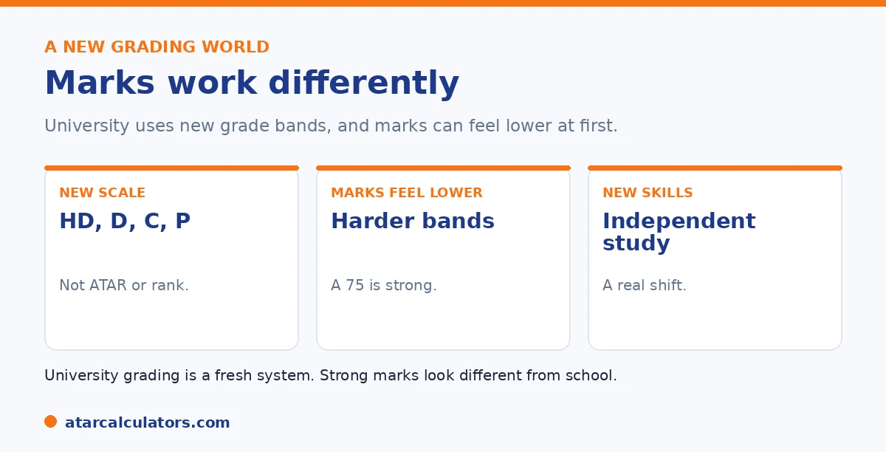

Here is the short version. University grading works differently from Year 12. Instead of a rank, you get grades in bands, High Distinction, Distinction, Credit, and Pass, usually as a percentage mark. Marks can feel lower at first, because a 75 is a strong result, not a weak one. University also rewards new skills, like independent study and extended writing. So it takes adjustment, and that is completely normal.
Starting university often brings a grading shock. The familiar marks of school give way to a new system, and the numbers can look alarming until you understand them.
Below is how grading changes, and what to expect. For context on the two systems, use our ATAR to GPA converter.
Key takeaways
- University uses grade bands: HD, D, C, P.
- Marks are usually a percentage, not a rank.
- A 75 is a strong result, not a weak one.
- Marks can feel lower at first.
- University rewards new skills.
- Adjusting takes time, and that is normal.
A new system of grade bands
At university, your results come as grades in bands, rather than a rank. The common bands are High Distinction, Distinction, Credit, and Pass, each covering a range of marks. So a single percentage maps to a named grade.

This is different from the ATAR, which ranked you against a cohort. At university, you are marked against a standard, so your grade reflects your work, not your position.
Why marks can feel lower
Many first-years are startled that their marks seem lower than at school. This is normal. University grade bands are demanding, and a mark in the seventies is a strong result, not a poor one.
So a 75, which might feel modest after school, is a Distinction at most universities, a genuinely good grade. It takes a little while to recalibrate what a good mark looks like. See our guide on whether your GPA might be lower than your ATAR.
Want context on the two systems?
Try the ATAR to GPA converter →New skills are rewarded
University also rewards different skills. There is more independent study, more extended writing and research, and less day-to-day structure. Marks often reward depth of analysis and original thinking, not just covering content.
So the way you earned marks at school may need to evolve. Students who develop strong independent study habits tend to adjust fastest. See our guide on whether a high ATAR predicts a high GPA.
It is worth being specific about what changes. This is because knowing it early lets you adapt rather than stumble. School rewards thorough coverage of a defined syllabus, with regular structure, frequent feedback and clear expectations about what will be assessed. University shifts the balance towards independent work. Reading you choose and manage yourself, extended essays and research tasks, and assessment that rewards depth of analysis, argument and originality over simply reproducing content. The day-to-day scaffolding thins out too. So nobody chases you to keep up. And the students who thrive are usually the ones who build their own structure, planning study time, starting major assessments early, and seeking feedback rather than waiting for it. This is why marks can feel lower at first even for capable students. The same effort that earned top marks at school may only meet the baseline at university until the new skills develop. The encouraging part is that these are learnable habits, not fixed traits. Treating the first semester as a period of adjustment, actively developing independent study and analytical writing, and using the support services most universities offer, all help you close the gap. Students who recognise that the game has changed, and adapt how they work rather than just working harder in the old way, tend to see their marks recover as they settle in.
Adjusting is completely normal
The most important thing to know is that adjusting takes time, and that is normal. Almost everyone finds first year a recalibration, as they learn the new standards and skills.
So do not be discouraged by early marks that look lower than school. Once you understand the bands and develop university study habits, your results usually settle. See our guide on ATAR vs GPA.
No cross-subject scaling at university
A big change from Year 12 is that university does not scale marks between subjects the way the ATAR system does. At university, you are marked against criteria for each unit, not ranked and scaled against a cohort across different subjects.
So the familiar idea of a subject “scaling up” does not apply. Your university mark reflects how well you met the criteria for that unit, full stop. This is a more direct system, and it means strong marks come from meeting the standard, not from your subject choice.
What is a good mark at university?
University marks often look lower than Year 12 marks, and that is normal. A Distinction, usually 75 or above, is a genuinely strong university result, and a Credit in the mid-60s is solid. High Distinctions are less common than top marks felt at school.
So recalibrate your sense of a good mark. A 75 at university is not the same as a 75 at school; it is a strong result. Judging your marks by school standards can make good university work feel disappointing when it is not.
Why expectations rise
Marks can feel lower because expectations rise. University asks for independent thinking, wider reading, and more sophisticated work than school, and it is marked accordingly. You are also now among students who all did well enough to be admitted, so the comparison group is stronger.
So the same effort that earned top marks at school may earn solid, not spectacular, marks at first. This is not a sign of failure; it is the normal step up in expectations, and your marks usually recover as you adapt.
Adjusting to the change
Adjusting takes a little time. Learning how your subject is marked, what markers look for, and how to study independently are skills you build over your first year. Using feedback and academic support speeds this up.
So give yourself some grace early on. Most students find their marks settle and rise as they learn the university system. See why a lower first-year GPA is normal.
Common questions
How does university grading differ from Year 12?
University uses grade bands, High Distinction, Distinction, Credit, and Pass, usually as a percentage mark, rather than a rank. You are marked against a standard, not your position in a cohort, and new skills are rewarded.
Why are university marks often lower than school?
Because university grade bands are demanding. A mark in the seventies is a strong result, not a weak one. A 75 is a Distinction at most universities, so it takes time to recalibrate what a good mark looks like.
Is a 75 a good mark at university?
Yes, very good. At most universities a 75 is a Distinction, a strong grade. University marks sit on a more demanding scale than school, so results that feel modest at first are often genuinely good.
What new skills does university reward?
More independent study, extended writing and research, and depth of analysis, with less day-to-day structure. The way you earned marks at school often needs to evolve, and strong independent study habits help most.
Is it normal to struggle with grades in first year?
Yes. Almost everyone finds first year a recalibration, as they learn the new standards and skills. Early marks that look lower than school usually settle once you understand the bands and build university study habits.
Understand the two systems
Explore how school and university grading compare. Indicative only.
Open the ATAR to GPA converter →Related guides
This guide is general information for students, not formal academic advice. ATAR and GPA measure different things on different scales, so there is no official conversion between them. Any figures here are approximate. For overseas applications, ask the specific institution for its needed conversion, or use a credential evaluation service. Grade scales also vary by university, so confirm with your own. The ATAR authority for your state is your admissions centre, such as UAC. Reviewed by the ATARCalculators Editorial Team.